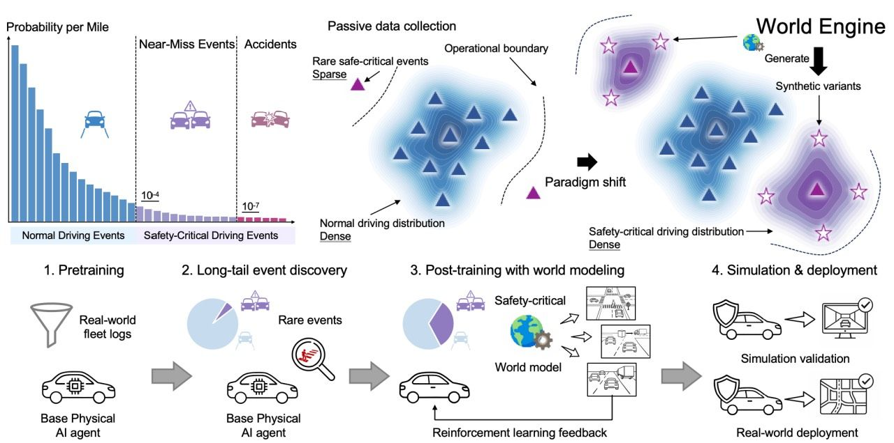

OpenDriveLabは、エンボディドAIと自動運転に特化した研究機関として、複数のカテゴリにわたる研究成果を発表し続けている。CVPR・ICCV・ECCV・NeurIPS・ICLR・RSS・IEEE-TPAMIなど一流の学会・ジャーナルに論文を掲載している。
注目の論文
World Engine（2026年）
「自動運転における物理AIポストトレーニングのための欠如していたインフラ。オープンソース。プロダクション検証済み。」Tianyu Li・Hongyang Li らが主導するこの研究は、ポストトレーニングインフラの課題に取り組むものである。
Planning-oriented Autonomous Driving（CVPR 2023）
CVPR 2023 Best Paper Awardを受賞。UniADフレームワークを導入した論文であり、「フルスタックの運転タスクを組み込んだ最初の包括的なフレームワーク」として評価されている。
研究カテゴリ
エンボディドAI
ロボット操作やヒューマノイド制御に関する幅広い研究を発表している。代表的な論文は以下の通りである。
- SMASH（一人称視点によるヒューマノイドの卓球）
- EgoHumanoid（ロコモーション・マニピュレーション転移）
- WholeBodyVLA（全身制御のための統一潜在学習）
- RISE（構成的ワールドモデルによる自己改善ポリシー）
- 触覚センシングおよびデータ収集システムに関する研究
エンドツーエンド自動運転
- SimScale（ロバストな自律性のためのシム-リアル学習フレームワーク）
- DriveLM（運転向けグラフベースの視覚的質問応答）
- ReSim（運転シナリオのための信頼性の高いワールドシミュレーション）
- Vista（汎化可能な運転ワールドモデル）
- 予測・計画手法に関する複数の論文
自動運転アルゴリズム
技術的な貢献として以下のテーマをカバーしている。
- 3D物体検出・Occupancy予測
- レーン検出・HDマッピング
- マルチエージェント軌跡予測
- Bird's Eye View（BEV）認識手法
- シーン理解・トポロジ推論
大規模コンピュータビジョン
基盤的なビジョン研究も行っている。代表的なトピックは以下の通りである。
- DetAny3D（プロンプタブルな3D検出基盤モデル）
- 動画物体セグメンテーションフレームワーク
- マスク画像モデリングアプローチ
- 自己教師あり学習手法